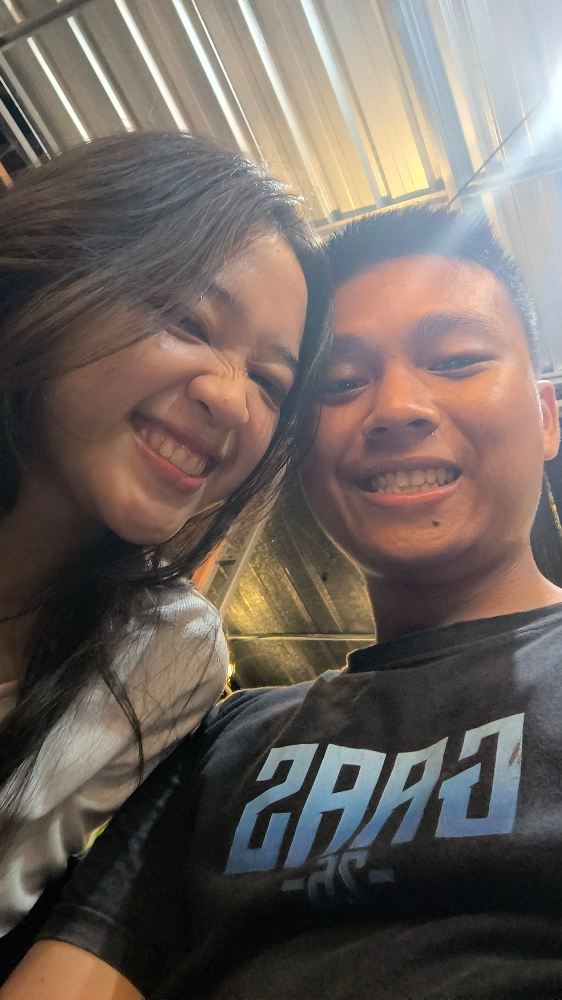
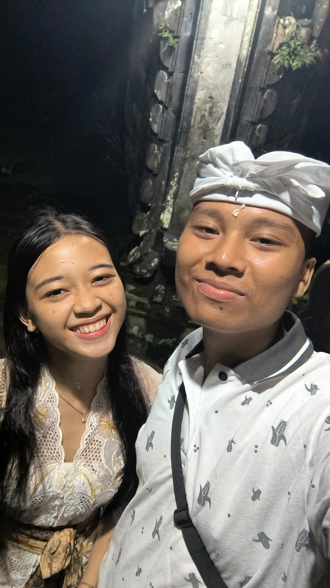

Every step on this journey is a worthwhile story.
In the last year of your teenage years, let the memories
become beautiful, hopes grow bigger, and dreams move closer ~
Siapa Aku?
" Hallo Kakak!!, Kenalin namaku Ni Ketut Wiwit Widiantari, panggilannya Wiwit Cantik. Aku lahir Senin, 20 Maret 2006, yaa walaupun senin itu hari yang tidak disukai banyak orang tapi aku disukai banyak orang kok hihihihi
oh iyaa, tepat hari ini aku ulang tahun lho kak...,
ucapin selamat dong
Yey maaci Kak..
Oh iyaa aku lupa kak,
Btw Kakak ulang tahun kapan?,
inget kapan pertama kali ulang tahun kakak dirayain?,
kalo dirayain biasanya kakak sama siapa?,
pasti seru banget yah dirayain sama orang-orang yang kita sayang?
hihihi.., kalo aku sih udah dirayain sejak kecil sama orang yang sayang sama aku.
kakak mau liat ga bahagianya aku waktu itu?
Dulu, di hari itu...
Aku hanyalah seorang anak kecil yang tak banyak mengerti tentang dunia. Tapi satu hal yang kupahami dengan jelas aku dicintai
Tanganku yang mungil menggenggam erat tangan mereka yang selalu ada.
Suara tawa mengisi ruangan, dan di depan mataku, lilin-lilin
kecil berpendar, seolah ikut bersorak merayakan keberadaanku.
Ada suara lembut yang berkata, "Selamat ulang tahun, Adik," dengan tatapan penuh kasih. Pelukan itu begitu hangat, seakan dunia ini takkan pernah menakutkan. Kue sederhana yang tersaji di meja terasa lebih manis karena tangan-tangan yang membuatnya dipenuhi cinta.
Perjalanan Waktu
Kini, aku tumbuh besar. Waktu telah membawa semua ke
tempat yang berbeda. Jarak dan kesibukan hidup perlahan memisahkan,
membuat momen seperti dulu terasa semakin sulit untuk diulang. Mungkin sulit akan ada lagi perayaan yang sama,
tak ada lagi tangan-tangan yang menyuapkan potongan kue dengan penuh kasih seperti dulu. Tapi satu hal yang tak berubah
~kenangan itu tetap hidup~
Namun sekarang, aku tak lagi hanya anak kecil yang berlari menuju pelukan mereka. Aku punya mimpi yang besar untuk diraih.
Aku belajar bahwa hidup tak selalu tentang dirayakan, tapi tentang bertahan. Tentang melangkah meski terkadang sendirian, tentang bangkit meski pernah terjatuh. Aku mengerti bahwa waktu tak bisa diputar kembali, tapi kenangan tetap bisa menjadi cahaya di tengah gelapnya perjalanan.
Aku tumbuh, bukan hanya menjadi lebih tua, tetapi menjadi lebih kuat. Aku belajar dari luka, dari rindu yang tak selalu bisa terobati, dan dari kehilangan yang mengajarkan betapa berharganya setiap kebersamaan.
Aku Adalah dua insan
kali ini, tumbuhku tidak sendiri. Ada seseorang di sampingku
laki-laki yang berjalan bersamaku, menggenggam tanganku dengan keyakinan yang sama. Kami punya mimpi yang besar, cita-cita yang sempat kami perjuangkan namun belum tercapai.


×
SELAMA
0Tahun
0Hari
0Jam
0Menit
0Detik
kami bersama, kami tertawa, bermimpi, dan berjuang berdampingan. Kami saling mengenal, menerima, dan menguatkan.
Namun, hidup sering kali berjalan di luar kendali. Waktu dan keadaan membawa kami pada ujian yang tidak pernah kami bayangkan
jarak memisahkan kami.
Sekarang, aku tidak bisa lagi menoleh ke samping dan melihatnya ada di sana.
Tidak ada lagi tangan yang bisa kugenggam saat aku lelah, tidak ada lagi bahunya yang selalu menjadi tempat terbaik untuk bersandar. Kami terpisah oleh ruang yang begitu jauh, oleh keadaan yang memaksa kami untuk belajar bertahan dengan cara yang berbeda.
Kadang aku bertanya, apakah dia juga merasakan rindu yang sama? Apakah hatinya juga sesak ketika tak bisa ada di sisiku?
Aku percaya, sejauh apa pun kami terpisah, hatiku akan selalu menemukannya.
seandainya..
kami tak terpisah oleh jarak, kami tak terpisah waktu dan ruang, dia pasti akan datang dan menemani hari dimana aku selalu dirayakan,
aku akan merasa dia adalah bagian dari kenangan indah itu, kalau dia bisa berucap, saat itu juga dia akan berkata
"Selamat Ulang tahun sayang,
yahaha tambah tua yaa.."
"saya masih disini, sama kamu, tunggu saya pulang pasti untuk kamu"
Waktu terus berjalan, dan aku tak bisa berhenti, yaa aku mungkin bertambah tua. Tapi jika suatu hari aku menoleh ke belakang, aku ingin tersenyum karena aku pernah ada di sini, pernah sebebas angin, dan pernah dicintai tanpa syarat.